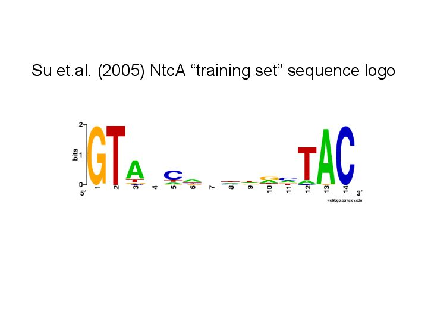

Sequences upstream of genes in MED4 up-regulated clusters 1 and 2 were examined for statistically over-represented motifs using AlignACE/CompareACE. Results from the AlignACE analyses (columns=8, 10, 12), the motif with the highest MAP score matched the NtcA binding site consensus sequence and had high (=~0.8) CompareACE scores against the Su et al. (2005) NtcA binding motif. These motifs were highly specific to the clusters examined (specificity scores <1e-9) and were, indeed, the most specific motifs found for each run. The motif from columns=8 has the same length as the NtcA binding site consensus, while the motifs from the other runs were longer, mainly due to appended AT strings. The motifs from the analyses of columns=8, 10, and 12 all had strong MAP and Specificity scores.
Collectively, these motifs support that MED4 clusters 1 and 2 are strongly and specifically regulated by NtcA.
The MAP, specificity, and CompareACE (similarity) scores from the AlignACE motif discovery analyses is available here.
